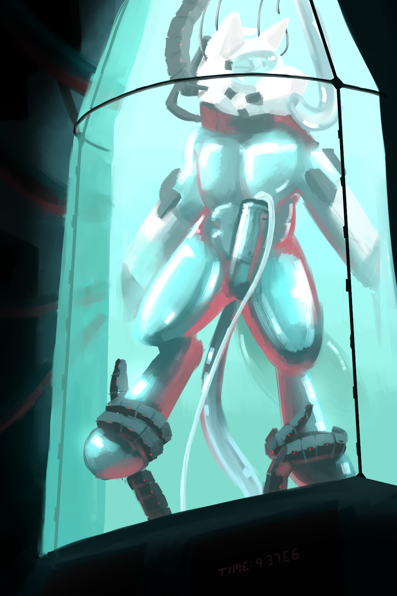

Total Acquisition
Written by TwistedSnakes
Illustrated by Sexotheque

The conference room was silent. Around a long, rectangular table sat ten people, five on each side, all of which dressed in business formal for a very important occasion. On one side sat the board members of Pinnacle Solutions and on the other sat the board members of Evertech. The air in the room was intense as everyone watched the arctic wolf that was sitting in the middle of the Pinnacle Solutions side of the table. The wolf skimmed through the contract one last time before setting it down on the table.
"Alright, Ms Athena, my board of directors, as well as my legal team, have looked at the contract and they think it's good to go," the wolf leaned back in his leather chair, "We can sign the deal if everything's ready on your end."
"We're more than ready, Mr Decro," the kangaroo nodded. "All you need to do is sign on the line at the bottom," she nodded towards the stack of papers where an empty space was expecting a signature.
The wolf pulled out a pen from his suit's breast pocket and signed the contract. Everyone in the room stood up and Decro reached out his hand to shake Athena's. The kangaroo shook his hand.
"Here's to a great partnership," Decro nodded as he forced a stiff smile.
"Partnership? Oh no, we're acquiring Pinnacle Solutions," the kangaroo smirked.
"What?" the wolf furrowed his brow suspiciously at her.
"Oh? Didn't you read the contract before signing it? We made some...creative redefining of a few terms here and there," Athena cooed.
"I'm not selling my company!" Decro protested.
"We know you'll never sell Pinnacle Solutions. They say that everyone has a price tag but apparently, that doesn't apply to you. Fortunately for us and unfortunately for you, your board members do have a price tag," the kangaroo explained.
The tiger and husky standing on either side of him put their paws on his shoulder, holding the seething wolf back.
"What's the meaning of this, Julius? Harlos?" he shouted at his board members.
"You see, you trust your board members too much. They've been on our side since the start of the negotiations," Athena sat on the conference table and turned to him. "Money seems to have made all four of them miss out the part where it says 'handing over all assets to Evertech'. So I guess we own Pinnacle Solutions now," she smiled.
"Why you dirty, stinking kangaroo!" Decro seethed as he reached out to grab her. His board members reacted quickly, pulling him back and pinning him down on the table.
"Get your hands off me, traitors!" the wolf raged as he thrashed around on the table.
"With all due respect, 'sir', we're working for Evertech now. And we can't let you lay a finger on our boss," the tiger said. "You can accept the situation willingly or we can do this the hard way."
"Argh! When I get out of here, all of you are-" there was a sound of bone hitting wood as a well-aimed punch knocked the wolf out.
Decro slowly came to and he slowly got to a kneeling position. His vision was slowly clearing up from the mild concussion and he examined his blurry surroundings. He was in some sort of glass pod mounted against the wall of a dark, metal-walled storage room. The glass pod was of a very familiar design: a cylindrical body that tapered off to a conical top. Exactly like the one Pinnacle Solutions developed and produced for long-term storage of people, from test subjects to prisoners.
As he stood up, Decro realized his clothes were gone. In their place was a silver skin-tight rubber suit that hugged every curve of his muscular body, leaving nothing to imagination. The suit encased him from his feet all the way up to his neck where a metal collar locked the suit in place.
There was an odd feeling around his tailhole and he reached his rubber-coated paw around his back to feel it. A short metal ring attached to the suit was inserted up his tailhole and locked in place around his sphincter. He blushed in embarrassment as he realized that his back door was kept open against his will. He tensed his muscles but the rims of the metal ring kept it in place.
His cock and balls were also stashed away in a pouch within the suit where a hardened shell locked them away in an inaccessible bulge.
Who would dare do this to him?
He looked out of the pod with an angry glare.
Athena...
Decro growled.
"Ah, I see you're awake," a door opened and Athena walked into the storage room.
"Grr...get me out of here!" Decro threatened, banging his fists against the glass that he knew was unbreakable.
"Hmm," the kangaroo appeared to ponder. "No. You see, now that we've acquired all of your technology, we need someone to test it on. Make sure it's working. And what better person to test them on than the ex-CEO of Pinnacle Solutions. Think of your stay here as an 'acquisition'," she explained.
"What are you doing to me?" the arctic wolf demanded.
"Well, you'll find out. Begin the procedure," Athena called out to the lab technicians in another room. "I might drop by to visit you if I remember," she grinned as she walked out of the storage room.
Suddenly, a translucent, pale blue liquid poured in from a hole in the wall near the top of the pod. The thick, viscous fluid splashed around his feet, quickly filling up the tank as it rose to his knees and up to his waist. Some of it entered the port around his tailhole, filling him up with the cold liquid and Decro gasped from the chilling sensation.
The liquid rose all the way up to his chest, neck, and to the top of the pod, leaving the wolf floating in the middle of the pod, holding his breath as he tried to stay calm. A canine-shaped helmet descended from a hole in the wall, opening up into a front and back half. Decro ducked as he tried to avoid the helmet. It was another one of his company's inventions and knowing the nature of their research, he didn't want his head inside the helmet
But the lack of oxygen was getting to him. His vision was getting hazy and his lungs were starting to burn. As much as he didn't want to give in, he didn't exactly have a choice. He swam up to the helmet and pushed his muzzle into the front of the helmet. The other half of the helmet snapped shut around his head and the helmet sealed around the collar around his neck. Decro yelped in shock, his cries coming out like a metallic, muffled sound in the tank.
A hollow phallus shoved itself into the wolf's muzzle as Decro's dignity took a hit from the fake canine cock that was now in his mouth. However, the tube connected to the mouth of the helmet pumped in fresh air to the wolf's lungs as a shallow respite.
There was a whirring around as two holes appeared in the wall and two more opened up from below him. Black, metal tentacles reached out for his arms and legs. Before he could react, they were tightly wrapped around his wrists and ankles as they pulled his arms and legs apart. His hands were pulled back into the holes in the wall and his feet were slotted into similar holes. Clamps around the holes locked around his limbs, holding him securely in place.
"Nghn!" he protested through his gag. A fifth tentacle with a dildo tip emerged from below him, snaking its way to his vulnerable "port". Decro could only whimper as he watched through the helmet's tinted visor in apprehension. The end of the dildo slid easily through his open tailhole and entered him. The wolf winced and struggled against his restraints as it slowly wriggled against his insides before finally nudging itself against his prostate, causing him to gasp involuntarily.
There was a sound of sliding metal as the metal ring of the suit latched onto the tentacle, locking the dildo securely within him. It began vibrating gently within him with a soft buzzing around and Decro squirmed. The feeling of being invaded was too much for him and he desperately wanted relief.
Relief, however, wasn't coming. His dick had slowly begun emerging from his sheath, pressing its hard flesh against the shell of his bulge that acted as a chastity device, stopping him from getting fully erect. The pain caused him to whimper even louder than before.
A tube was lowered around his crotch. With a hissing sound, it secured itself to his bulge and the shell opened up, releasing his hard member into the tube. There was a slurping sound as the tube closed in on his dick and squeezed it tightly, massaging his flesh with stroking motions.
The irony of being milked by his own technology was not lost on Decro. He struggled in vain, knowing full well that there was no escape for him. But he couldn't sit back and let them have their way with him. He had to try.
But the pleasure was too much for him and before he knew it, he was thrusting his hips, releasing his seed into the tube which sucked it all up and drained it away. He hung his head in embarrassment by his lack of self-control. The CEO of Pinnacle Solutions, now reduced to a helpless toy. As he thought about that, a realization hit him: these machines were part of a life support system. With the tube in his mouth, they could feed him oxygen and food. His waste would be drained away with the tube on his cock and the probe in his ass.
How long were they going to keep him here? A day? A week? A month? How could things get any worse?
As if to add insult to injury, more wires descended from the top of the pod. Before he could react, they connected to the various ports in his helmet. The helmet visor lit up and words flashed in front of him.
"Storage duration: indefinite," the words read.
Indefinite? He couldn't stay here forever. Surely not?
Decro shook his head as if to protest to the machine. But the machine had other plans for him. A swirling pattern was projected in front of his visor.
"You are a cum slave," a voice began playing in his helmet. "Your only purpose in life is to produce your quota of cum."
Decro listened to the words in alarm.
Cum slave?
He needed to get out. He had things to do, places to be. What about his life? His goals? He shouldn't be here. He shouldn't be turned into a helpless object, milked for his cum.
Yet here he was and there was nothing he could do about it. He would be here for a very long time. The years ahead would see him turned into a mindless drone, staring out of his visor with a blank expression. He would hang in his glass pod limply, moving only to thrust his hips as he orgasmed into his cock tube.
Yes, he would be here for a very long time indeed.
~ End ~